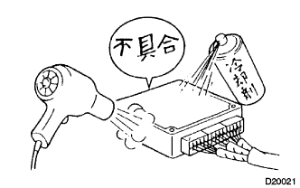

ECU制御システムのトラブルシューティングの方法 トラブルシューティングの進め方 |
| 手順1 | 不具合車両入庫 |
| 手順2 | 顧客からの不具合分析 |
不具合が発生したときの状態および状況を顧客に聞く。
| 手順3 | 不具合現象確認およびダイアグノシスコード(含むフリーズフレームデータ)点検 |
SST(トヨタエレクトリカルテスター)を使用して、バッテリー電圧を点検する。
ヒューズ切れ、ワイヤハーネス断線、短絡、コネクターの接続不良など目視で確認できる箇所の点検を行う。
エンジンを十分に暖機する。
不具合箇所現象および状態を確認し、該当するチャートに従ってダイアグノーシスコードを点検する。
|
| ||||
|
| ||||
|---|---|---|---|---|---|
| 手順4 | ダイアグノシスコード表 |
手順3の結果を確認し、ダイアグノーシスコード表を使用し、システムの点検手順を確認またはどの部分を点検するべきか確認する。
|
|
| 手順5 | 症状別一覧 |
手順3の結果を確認し、症状別一覧を使用し、システムの点検手順を確認またはどの部分を点検するべきか確認する。
| 手順6 | 回路点検または部品点検 |
手順4の結果または、症状別一覧を使用し、システムの回路またはどの部品を点検するべきか確認する。
| 手順7 | 不具合箇所の修理 |
手順6の指示に従い、不具合の起きているシステムまたは部分を修理する。
| 手順8 | 確認テスト |
修理終了後、不具合が解消されているか確認すること。(不具合が再現する場合は、最初に不具合が発生した時と同じ環境、状態で確認テストを行う。)
| |||||
|---|---|---|---|---|---|

| システム | ダイアグノーシスコードチェック | テストモード (チェックモード) | アクティブテスト |
| EFIシステム[1NZ-FE] | ○ | ○ | ○ |
| EFIシステム[2NZ-FE] | ○ | ○ | ○ |
| EBD付きABSシステム | ○ | ○ | ○ |
| 電子制御式オートマチツクトランスアクスル[ECT] (U441E) | ○ | ○ | |
| 電子制御式オートマチツクトランスアクスル[ECT] (U340E) | ○ | ○ | |
| SRSエアバッグシステム | ○ | ||
| ヒータ & エアコンディショナーシステム | ○ | ||
| バッグガイドモニターシステム | ○ | ||
| オーディオシステム | ○ | ||
| G-BOOKシステム | ○ | ||
| パワースライドドアシステム | ○ |
| 手順1 | ダイアグノーシスコード点検 |
| 手順2 | 表示されているダイアグノーシスコードをメモにとり表示を消す。 |
| 手順3 | 不具合現象の確認 |
| A | 不具合発生 |
| B | 不具合未発生 |
|
| ||||
| |||||
| 手順4 | 不具合現象のシュミレーション方法を用い、シュミレーションテストを行う。 |
| 手順5 | ダイアグノーシスコード点検 |
| A | 正常なコードの表示 |
| B | ダイアグノーシスコード表示 |
|
| ||||
|
| ||||
|---|---|---|---|---|---|
| 手順6 | 不具合現象の確認 |
| A | 不具合未発生 |
| B | 不具合発生 |
ダイアグノーシスコードが最初のダイアグノーシスコード点検で表示された場合は、不具合は過去の回路のワイヤハーネス内で発生しているので、ワイヤハーネスおよびコネクターを点検する。
不具合は診断回路以外の場所で発生している(最初に表示しているダイアグノーシスコードは過去に起きた不具合かまたは二次的な不具合である。)
|
| ||||
|
| ||||
|---|---|---|---|---|---|
 |
部品とセンサー
推定原因系の部品に手で軽く叩くなどの振動を与え、不具合の発生がないか点検する。
コネクター
コネクターを軽く上下、左右にゆする。
ワイヤハーネス
ワイヤハーネスを軽く上下、左右にゆすり、不具合の発生がないか点検する。(特にワイヤハーネスではコネクターの付け根、振動の支点、ボデーの貫通部を重点的にチェックする。)
|  |
ヘアドライヤー、冷却剤を用いて、推定不具合系の部品を加熱または冷却し、不具合の発生がないか点検する。
 |
車両に水をかけ不具合の発生がないか点検する。
ヒータブロア、ヘッドランプ、リヤデフォッガなどの電気部品を作動させて電気的負荷をあげ、不具合の発生がないか点検する。